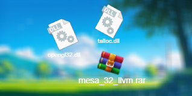

CODE :KhoaGame
SUPPORTS :
INTEL (có card onboard)
NVIDA
AMD
ƯU ĐIỂM :
tối ưu card rời lẫn card on board
làm chơ game mượt hơn
NHƯỢC ĐIỂM :
làm cho game mờ hơn
không nên sử dụng lâu dài
vì sử dụng lâu dài sẽ khiến mỏi mắt và hại mắt
------------------------------------------------------------------------------------------------------------------
file có tên mesa
file mesa được dùng để tối ưu hoá các game dùng tới card màn hình ăn card màn hình nhiều hơn cpu
file này cũng giúp tối ưu cả card rời lẫn card on nên các bạn không lo về việc tối bị lag khi chơi game
để dùng được file này ta cần giải nén và bỏ vào file location của game sau đó chạy game với quyền admin
file này được chỉnh sửa code từ chính card
NVIDA
AMD
INTEL
nên không lo về vấn đề virus nha